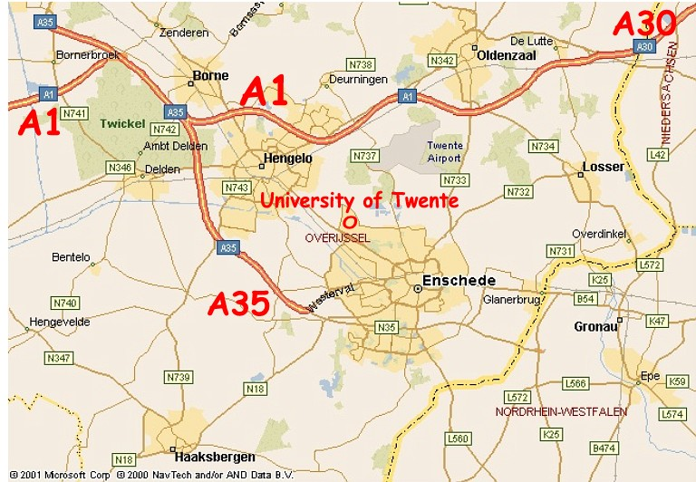

Traveling information
By plane and train
From the Dutch main airport, called Schiphol, located in Amsterdam, traveling to AOSD is easy and inexpensive. By train, you can travel directly from the airport to Hengelo and Enschede. In April, airfares from around the world to Europe are inexpensive. If you'll stay near the conference location, you can either go to Hengelo or Enschede. If your hotel is in downtown Enschede, it is of course better to get off the train at Enschede central station. From either station, you can take either a taxi or a bus to go to your hotel.
From Schiphol, each hour 2 trains leave in the direction of Enschede.
Use the link below to go to the Dutch railway site.
To fill in other directions and dates you can use the default form of the Dutch railway website.
By car
If you travel by car e.g. from Germany or Belgium, take A35 to Enschede, and then exit to Enschede West and follow the sign Universiteit.

The University of Twente is located between Hengelo and Enschede